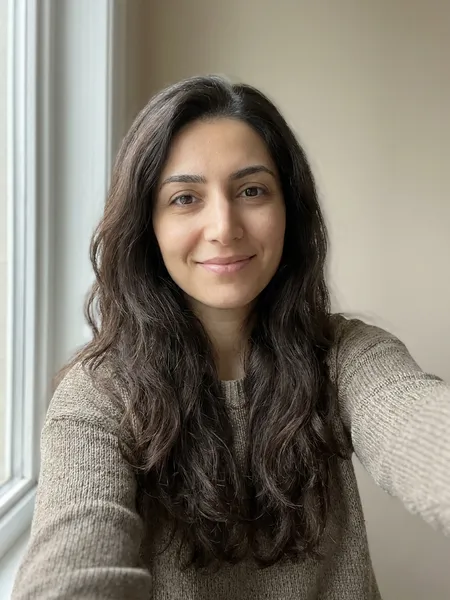
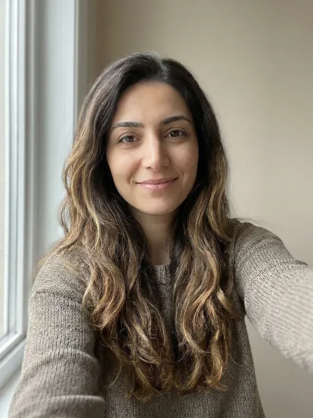
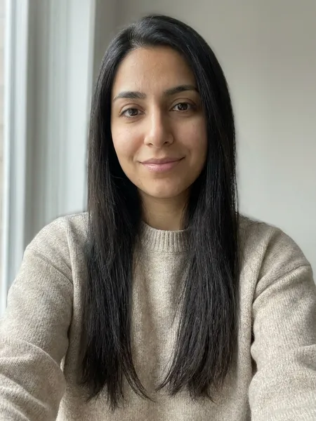
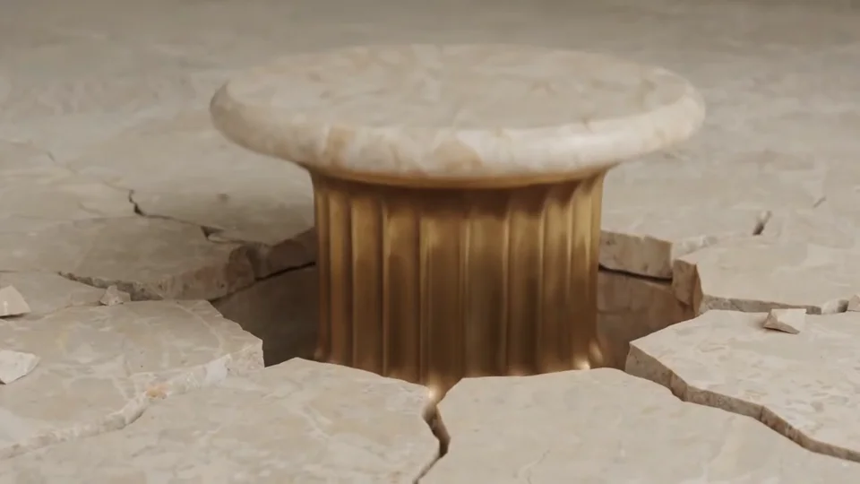
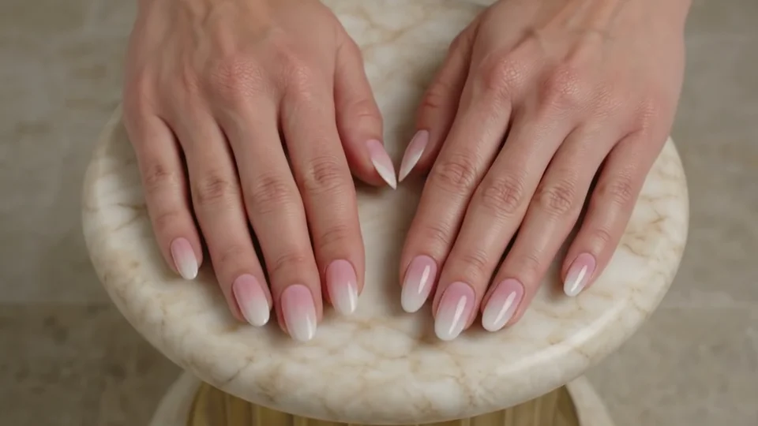
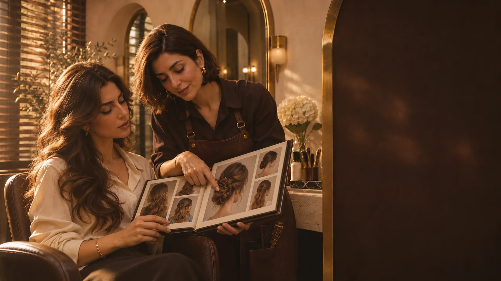

اعتماد بیشتر مشتریان
معرفی حرفهای و شفاف، اعتماد و اطمینان بیشتری میسازد.
با هوش مصنوعی، قبل از انجام خدمات، مدل مو، رنگ و استایل را روی عکس واقعی مشتری شبیهسازی کنید؛ اعتماد او را جلب کنید و تعداد رزروها و درآمد سالن خود را افزایش دهید.
دموی اختصاصی و رایگان متناسب با سالن شما


قبل از تغییربعد از تغییرابزاری حرفهای برای جذب مشتری بیشتر، مدیریت آسانتر و رشد واقعی سالن شما.
معرفی حرفهای و شفاف، اعتماد و اطمینان بیشتری میسازد.
دریافت و پیگیری درخواستها و ارتباط راحتتر با مشتریان.
دیدهشدن بهتر و دسترسی آسان، تعداد درخواستهای شما را افزایش میدهد.
نمایش جذاب خدمات، نمونهکارها و قیمتها در یک محیط حرفهای.
داشتن یک حضور آنلاین حرفهای و متفاوت نسبت به رقبا.
دسترسی سریع به اطلاعات کامل خدمات، انتخاب را آسان میکند.
در ۴ گام ساده، از عکس مشتری تا ارسال درخواست به سالن شما

مشتری از چهره یا موی خود عکس بارگذاری میکند.
خدمت موردنظر (مثل رنگ، کوتاهی مو و...) و مدل دلخواه را انتخاب میکند.
آینه مدل انتخابی را بهصورت واقعی روی عکس مشتری شبیهسازی میکند.
درخواست مشتری همراه عکس و جزئیات خدمت برای سالن شما ارسال میشود.
یک پلتفرم کامل برای نمایش خدمات، مشاوره تصویری و دریافت درخواست مستقیم از مشتریان


این کارتها صرفاً برای نمایش ساختار بصری طراحی هستند؛ نظرات واقعی بعداً جایگزین میشوند.
«پشتیبانی عالی و رابط کاربری خیلی ساده دارد. تیم ما خیلی زود با آن آشنا میشود.»
متن نمایشی«از وقتی آینه را استفاده میکنیم، مشتریها هنگام انتخاب مدل احساس اطمینان بیشتری دارند.»
متن نمایشی«گزارشهای دقیق و تحلیل مشتریان به ما کمک کرده بهتر تصمیم بگیریم.»
متن نمایشیبا مشاوره اختصاصی، نیازهای سالن خود را بررسی کنید و نسخه مناسب کسبوکارتان را انتخاب کنید.
با مشاوره اختصاصی، نیازهای سالن خود را بررسی کنید. این یک پیشنمایش طراحی است و نسخه نهایی متن و شرایط فروش بعداً مشخص میشود.

پاسخ چند سؤال رایج مدیران سالنها درباره آینه.
در این طراحی، امکانات معرفی خدمات، نمایش مدلهای مختلف و ثبت درخواست مشتری بهصورت یک تجربه یکپارچه نمایش داده شدهاند. جزئیات قطعی محصول پس از تأیید محتوا نوشته میشود.
مدت زمان و مراحل راهاندازی در نسخه نهایی محتوای سایت درج خواهد شد.
نسخه موبایل بهصورت ریسپانسیو طراحی شده و تجربه مناسب صفحههای کوچک در نظر گرفته شده است.
جدول تعرفهها در مرحله تعیین محتوای نهایی اضافه خواهد شد.
شرایط پشتیبانی و روشهای ارتباطی پس از تأیید اطلاعات تجاری اعلام میشوند.